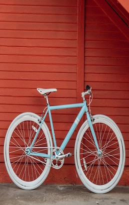

Cons: Lack of fairings, little to no windshield, minimal luggage options.

About bike
Adventure bikes were designed for exactly what their name suggests— adventures! These sturdy bikes are
typically outfitted with a tall seat height, tall windshield, ample suspension travel, upright seating
positioning, and plenty of luggage options. Most ADV bikes will also come equipped with on-road/off-road tires